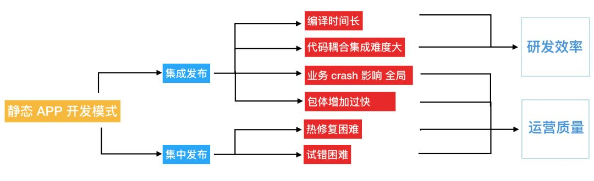
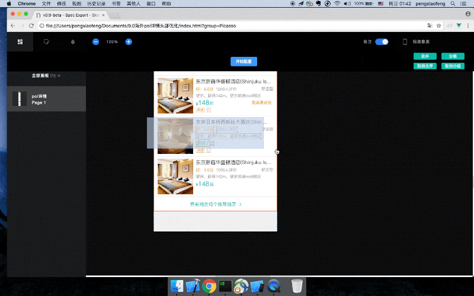

Picasso：开启大前端的未来
总第254篇
2018年 第46篇
背景
Picasso是大众点评移动研发团队自研的高性能跨平台动态化框架，经过两年多的孕育和发展，目前在美团多个事业群已经实现了大规模的应用。
Picasso源自我们对大前端实践的重新思考，以简洁高效的架构达成高性能的页面渲染目标。在实践中，甚至可以把Native技术向Picasso技术的迁移当做一种性能优化手段；与此同时，Picasso在跨越小程序端和Web端方面的工作已经取得了突破性进展，有望在四端（Android、iOS、H5、微信小程序）统一大前端实践的基础之上，达成高性能大前端实践，同时配合Picasso布局DSL强表达能力和Picasso代码生成技术，可以进一步提升生产力。
客户端动态化
2007年，苹果公司第一代iPhone发布，它的出现“重新定义了手机”，并开启了移动互联网蓬勃发展的序幕。Android、iOS等移动技术，打破了Web应用开发技术即将一统江湖的局面，之后海量的应用如雨后春笋般涌现出来。移动开发技术给用户提供了更好的移动端使用和交互体验，但其“静态”的开发模式却给需要快速迭代的互联网团队带来了沉重的负担。
客户端“静态”开发模式

客户端开发技术与Web端开发技术相比，天生带有“静态”的特性，我们可以从空间和时间两个维度来看。
从空间上看需要集成发布
美团App承载业务众多，是跨业务合流，横向涉及开发人员最多的公司，虽然开发人员付出了巨大的心血完成了业务间的组件化解耦拆分，但依然无可避免的造成了以下问题：
编译时间过长。 随着代码复杂度的增加，集成编译的时间越来越长。研发力量被等待编译大量消耗，集成检查也变成了一个巨大的挑战。
App包体增长过快。 这与迅猛发展的互联网势头相符，但与新用户拓展和业务迭代进化形成了尖锐矛盾。
运行时耦合严重。 在集成发布的包体内，任何一个功能组件产生的Crash、内存泄漏等异常行为都会导致整个App可用性下降，带来较大的损失。
集成难度大。 业务线间代码复用耦合，业务层、框架层、基础服务层错综复杂，需要拆分出相当多的兼容层代码，影响整体开发效率。
从时间上看需要集中发布
线上Bug修复须发版或热修复，成本高昂。新功能的添加也必须等待统一的发版周期，这对快速成长的业务来说是不可接受的。App开发还面临严重的长尾问题，无法为使用老版本的用户提供最新的功能，严重损害了用户和业务方的利益。
这种“静态”的开发模式，会对研发效率和运营质量产生负面影响。对于传统的桌面应用软件开发而言，静态的研发模式也许是相对可以接受的。但对于业务蓬勃发展的移动互联网行业来说，静态开发模式和敏捷迭代发布需求的矛盾日益突出。
客户端动态化的趋势
如何解决客户端“静态”开发模式带来的问题？
业界最早给出的答案是使用Web技术
但Web技术与Native平台相比存在性能和交互体验上的差距。在一些性能和交互体验可以妥协的场景，Web技术可以在定制容器、离线化等技术的支持下，承载运营性质的需要快速迭代试错的页面。
另一个业界给出的思路是优化Web实现
利用移动客户端技术的灵活性与高性能，再造一个“标准Web浏览器”，使得“Web技术”同时具有高性能、良好的交互体验以及Web技术的动态性。这次技术浪潮中Facebook再次成为先驱，推出了React Native技术（简称RN）。不过RN的设计取向有些奇怪，RN不兼容标准Web，甚至不为Android、iOS双端行为对齐做努力。产生的后果就是所有“吃螃蟹”的公司都需要做二次开发才能基本对齐双端的诉求。同时还需要尽最大努力为RN的兼容性问题、稳定性问题甚至是性能问题买单。
而我们给出的答案是Picasso
 Picasso另辟蹊径，在实现高性能动态化能力的同时，还以较强的适应能力，以动态页面、动态模块甚至是动态视图的形式融入到业务开发代码体系中，赢得了许多移动研发团队的认同。
Picasso另辟蹊径，在实现高性能动态化能力的同时，还以较强的适应能力，以动态页面、动态模块甚至是动态视图的形式融入到业务开发代码体系中，赢得了许多移动研发团队的认同。
Picasso框架跨Web端和小程序端的实践也已经取得了突破性进展，除了达成四端统一的大前端融合目标，Picasso的布局理念有望支持四端的高性能渲染，同时配合Picasso代码生成技术以及Picasso的强表达能力，生产力在大前端统一的基础之上得到进一步的提升。
Picasso动态化原理

Picasso应用程序开发者使用基于通用编程语言的布局DSL代码编写布局逻辑。布局逻辑根据给定的屏幕宽高和业务数据，计算出精准适配屏幕和业务数据的布局信息、视图结构信息和文本、图片URL等必要的业务渲染信息，我们称这些视图渲染信息为PModel。PModel作为Picasso布局渲染的中间结果，和最终渲染出的视图结构一一对应；Picasso渲染引擎根据PModel的信息，递归构建出Native视图树，并完成业务渲染信息的填充，从而完成Picasso渲染过程。需要指出的是，渲染引擎不做适配计算，使用布局DSL表达布局需求的同时完成布局计算，即所谓“表达即计算”。
 从更大的图景上看，Picasso开发人员用TypeScript在VSCode中编写Picasso应用程序；提交代码后可以通过Picasso持续集成系统自动化的完成Lint检查和打包，在Picasso分发系统进行灰度发布，Picasso应用程序最终以JavaScript包的形式下发到客户端，由Picasso SDK解释执行，达成客户端业务逻辑动态化的目的。
从更大的图景上看，Picasso开发人员用TypeScript在VSCode中编写Picasso应用程序；提交代码后可以通过Picasso持续集成系统自动化的完成Lint检查和打包，在Picasso分发系统进行灰度发布，Picasso应用程序最终以JavaScript包的形式下发到客户端，由Picasso SDK解释执行，达成客户端业务逻辑动态化的目的。
在应用程序开发过程中，TypeScript的静态类型系统，搭配VSCode以及Picasso Debug插件，可以获得媲美传统移动客户端开发IDE的智能感知和断点调试的开发体验。Picasso CI系统配合TypeScript的类型系统，可以避免低级错误，助力多端和多团队的配合；同时可以通过“兼容计算”有效的解决能力支持的长尾问题。
Picasso布局DSL

Picasso针对移动端主流的布局引擎和系统做了系统的对比分析，这些系统包括:
Android开发常用的LinearLayout。
前端及Picasso同类动态化框架使用的FlexBox。
苹果公司主推的AutoLayout。
其中苹果官方推出的AutoLayout缺乏一个好用的DSL，所以我们直接将移动开发者社区贡献的AutoLayout DSL方案列入对比。
首先从性能上看，AutoLayout系统是表现最差的，随着需求复杂度的增加“布局计算”耗时成指数级的增长。FlexBox和LinearLayout相比较AutoLayout而言会在性能表现上有较大优势。但是LinearLayout和FlexBox会让开发者为了布局方面需要的概念增加不必要的视图层级，进而带来渲染性能问题。
从灵活性上看，LinearLayout和FlexBox布局有很强的概念约束。一个强调线性排布，一个强调盒子模式、伸缩等概念，这些模型在布局需求和模型概念不匹配时，就不得不借助编程语言进行干预。并且由于布局系统的隔离，这样的干预并不容易做，一定程度上影响了布局的灵活性和表达能力。而配合基于通用编程语言设计的DSL加上AutoLayout的布局逻辑，可以获得理论上最强的灵活性。但是这三个布局系统都在试图解决“用声明式的方式表达布局逻辑的问题”，基于编程语言的DSL的引入让布局计算引擎变得多余。
 Picasso布局DSL的核心在于：
Picasso布局DSL的核心在于：
基于通用编程语言设计。
支持锚点概念（如上图）。
使用锚点概念可以简单清晰的设置非同一个坐标轴方向的两个锚点“锚定”好的视图位置。同时锚点可以提供描述“相对”位置关系语义支持。事实上，针对布局的需求更符合人类思维的描述是类似于“B位于A的右边，间距10，顶对齐”，而不应该是“A和B在一个水平布局容器中……”。锚点概念通过极简的实现消除了需求描述和视图系统底层实现之间的语义差距。
下面举几个典型的例子说明锚点的用法：
1. 居中对齐:

view.centerX = bgView.width / 2
view.centerY = bgView.height /2
2. 右对齐：

view.right = bgView.width - 10
view.centerY = bgView.height / 2
3. 相对排列：

viewB.top = viewA.top
viewB.left = viewA.right + 10
4. “花式”布局：

viewB.top = viewA.centerY
viewB.left = viewA.centerX
Picasso锚点布局逻辑具有理论上最为灵活的的表达能力，可以做到“所想即所得”的表达布局需求。但是有些时候我们会发现在特定的场景下这样的表达能力是“过剩的”。类似于下图的布局需求，需要水平排布4个视图元素、间距10、顶对齐；可能会有如下的锚点布局逻辑代码：

v1.top = 10
v1.left = 10
v2.top = v1.top
v3.top = v2.top
v4.top = v3.top
v2.left = v1.right + 10
v3.left = v2.right + 10
v4.left = v3.right + 10
显然这样的代码不是特别理想，其中有较多可抽象的重复的逻辑，针对这样的需求场景，Picasso提供了hlayout布局函数，完美的解决了水平排布的问题：
hlayout([v1, v2, v3, v4],
{ top: 10, left: 10, divideSpace: 10 })
有心人可以发现，这和Android平台经典的LinearLayout如出一辙。对应hlayout函数的还有vlayout，这一对几乎完整实现Android LinearLayout语义的兄弟函数，实现逻辑不足300行，这里强调的重点其实不在于两个layout函数，而是Picasso布局DSL无限制的抽象表达能力。如果业务场景中需要类似于Flexbox或其他的概念模型，业务应用方都可以按需快速的做出实现。
在性能方面，Picasso锚点布局系统避免了“声明式到命令式”的计算过程，完全无需布局计算引擎的介入，达成了“需求表达即计算”的效果，具有理论上最佳性能表现。
由此可见，Picasso布局DSL，无论在性能潜力和表达能力方面都优于以上布局系统。Picasso布局DSL的设计是Picasso得以构建高性能四端动态化框架的基石。
同时得益于Picasso布局DSL的表达能力和扩展能力，Picasso在自动化生成布局代码方面也具有得天独厚的优势，生成的代码更具有可维护性和扩展性。伴随着Picasso的普及，当前前端研发过程中“视觉还原”的过程会成为历史，前端开发者的经历也会从“复制”视觉稿的重复劳动中解脱出来。

Picasso高性能渲染

业界对于动态化方案的期待一直是“接近原生性能”，但是Picasso却做到了等同于原生的渲染效率，在复杂业务场景可以达成超越原生技术基本实践的效果。就目前Picasso在美团移动团队实践来看，同一个页面使用Picasso技术实现会获得更好的性能表现。
Picasso实现高性能的基础是宿主端高效的原生渲染，但实现“青出于蓝而胜于蓝”的效果却有些反直觉，在这背后是有理论上的必然性的：
Picasso的锚点布局让 布局表达和布局计算同时发生。避免了冗余反复的布局计算过程。
Picasso的布局理念使 视图层级扁平。所有的视图都各自独立，没有为了布局逻辑表达所产生的冗余层级。
Picasso设计支持了 预计算的过程。原本需要在主线程进行计算的部分过程可以在后台线程进行。
在常规的原生业务编码中，很难将这些优化做到最好，因为对比每个小点所带来的性能提升而言，应用逻辑复杂度的提升是不能接受的。而Picasso渲染引擎，将传统原生业务逻辑开发所能做的性能优化做到了“统一复用”，实现了一次优化，全线受益的目标。
Picasso在美团内部的应用
 Picasso跨平台高性能动态化框架在集团内部发布后，得到了广泛关注，集团内部对于客户端动态化的方向也十分认可，积极的在急需敏捷发布能力的业务场景展开Picasso应用实践；经过大概两年多的内部迭代使用，Picasso的可靠性、性能、业务适应能力受到的集团内部的肯定，Picasso动态化技术得到了广泛的应用。
Picasso跨平台高性能动态化框架在集团内部发布后，得到了广泛关注，集团内部对于客户端动态化的方向也十分认可，积极的在急需敏捷发布能力的业务场景展开Picasso应用实践；经过大概两年多的内部迭代使用，Picasso的可靠性、性能、业务适应能力受到的集团内部的肯定，Picasso动态化技术得到了广泛的应用。
通过Picasso的桥接能力，基于Picasso的上层应用程序仍然可以利用集团内部移动技术团队积累的高质量基础建设，同时已经形成初步的公司内部大生态，多个部门已经向Picasso生态贡献了动画能力、动态模块能力、复用Web容器桥接基建能力、大量业务组件和通用组件。
Picasso团队除了持续维护Picasso SDK，Picasso持续集成系统、包括基于VSCode的断点调试，Liveload等核心开发工具链，还为集团提供了统一的分发系统，为集团内部大前端团队开展Picasso动态化实践奠定了坚实的基础。
到发稿时，集团内部Picasso应用领先的BG已经实现Picasso动态化技术覆盖80%以上的业务开发，相信经过更长时间的孵化，Picasso会成为美团移动开发技术的“神兵利器”，助力公司技术团队实现高速发展。
列举Picasso在美团的部分应用案例：


Picasso开启大前端未来
Picasso在实践客户端动态化的方向取得了成功，解决了传统客户端“静态”研发模式导致的种种痛点。总结下来：
如果想要 敏捷发布，使用Picasso。
如果想要 高交付质量，使用Picasso。
如果想要 优秀用户体验，使用Picasso。
如果想要 高性能表现，使用Picasso。
如果想要 自动化生成布局代码，使用Picasso。
如果想要 高效生产力，使用Picasso。
至此Picasso并没有停止持续创新的脚步，目前Picasso在Web端和微信小程序端的适配工作已经有了突破性进展，正如Picasso在移动端取得的成就一样，Picasso会在完成四端统一（Android、iOS、Web、小程序）的同时，构建出更快、更强的大前端实践。
业界对大前端融合的未来有很多想象和憧憬，Picasso动态化实践已经开启大前端未来的一种新的可能。Picasso暂时还未开源，如对Picasso有兴趣，欢迎加入大众点评的大家庭。
作者简介
晓燕，Picasso核心SDK团队负责人，八年移动应用开发经验，2012年加入大众点评。Picasso 核心SDK团队致力于探索更好的客户端动态化实践方案，贡献和维护高性能高可靠性的Picasso SDK，同时推进Picasso的应用和大生态的引导和建设。
大为 ，Picasso项目负责人，点评平台移动技术负责人，点评平台在持续交付点评平台性产品的同时，持续输出支撑集团移动技术的框架和方案；点评平台移动技术团队同时也是广义的Picasso团队，全面参与建设了Picasso工具链，Picasso持续集成系统，Picasso分发系统，Picasso核心UI组件，点评平台会持续助力集团移动端业务的动态化演进。
---------- END ----------
也许你还想看